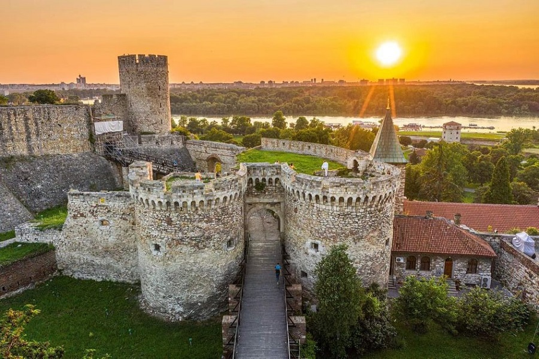
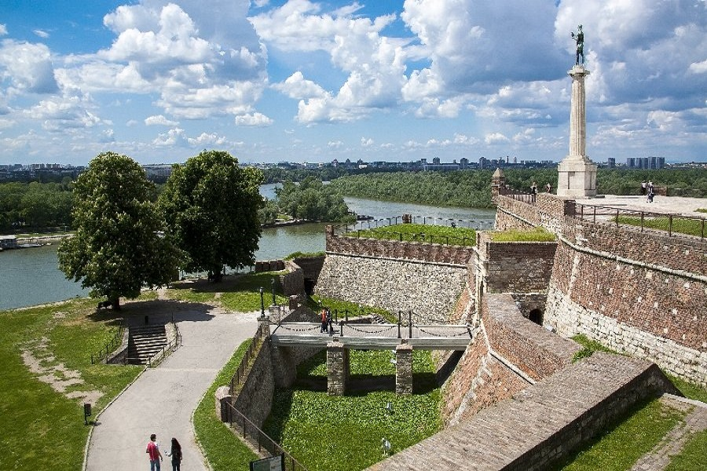
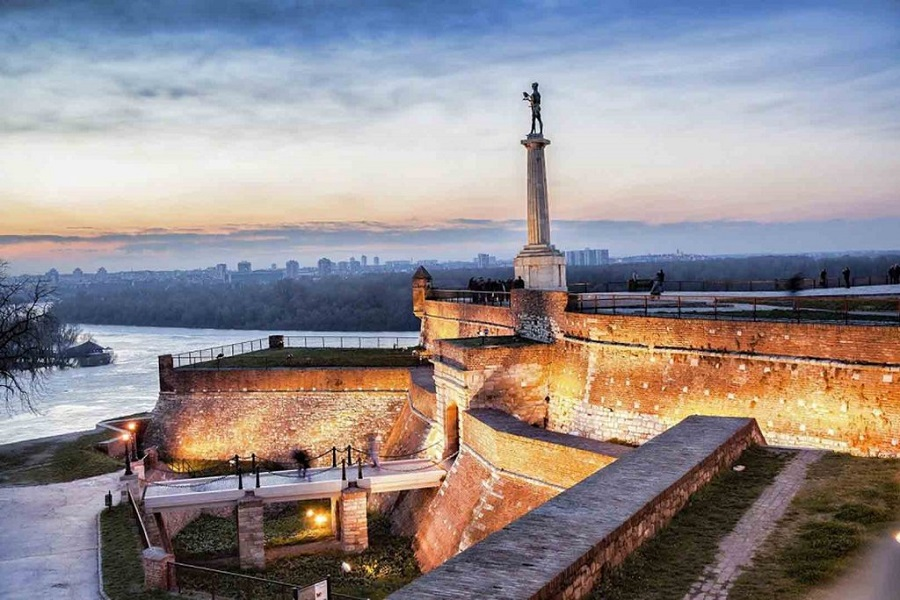
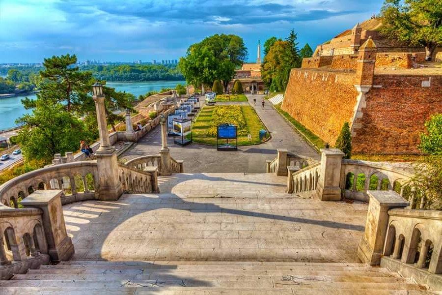

“Večni su samo vidici Kalemegdana. Kad se po njemu pođe, vraćaju se dva utiska svake zime. Da sneg budi sećanja, kod svakog, na detinjstvo, a da sada raskopani jarkovi u parku sećaju na rovove iz rata, zavejane zaklone i prihvatnice”, rekao je Miloš Crnjanski o Kalemegdanu pre skoro ceo jedan vek. Ako u nečemu Srbija ne manjka, to je upravo istorija i dobra koja su nam iza brojnih osvajača i ratova ostala. Kalemegdan, svakako najveća kulturno-istorijska celina na ovim prostorima, svoje poreklo vodi još od neolita. Smenjivali su se Rimljani, Turci, Ugari. Svaki osvajač sa sobom je donosio i odnosio deo ovog mesta. Kalemegdan je park koji sa Beogradskom tvrđavom čini jedinstvenu celinu, a čiji svaki kutak zainteresovanim posetiocima zavodljivo nudi priču o nekim davnim vremenima. “’Kale’ je brdo” ili ipak ne Iako istorija tvrđave doseže čak i do neolita, ipak su se najznačanije promene događale za vreme vladavine despota Stefana Lazarevića, Turaka i Habsburga. I dok su pojedini zvaničnici novijeg datuma želeli da zvuče pametno, ipak im to činjenice nisu dozvoljavale. Ime Kalemegdana potiče od turskih reči “kale”, koja znači grad ili tvrđava i „megdan” što znači polje. Breg na kome je podignuta Tvrđava, Turci su nazivali fićir bair – breg razmišljanja.. Nakon što je Stefan Lazarević dobio titulu despota i Beograd na upravljanje, 1404. godine ovaj grad prvi put postaje prestonica srpske države – njeno vojno ekonomsko i kulturno sedište. Pošto je, po rečima Konstantina Filozofa, grad bio „razrušen i zapušten“, despot je odmah pristupio obnovi zatečenih utvrđenja, a potom i izgradnji novih gradskih bedema i kula. Beograd je već tada bio podeljen na dve celine – Gornji i Donji grad. Grad je bio okružen dvostrukim zidinama sa kulama i jarkom sa kopnene strane. U Gornjem gradu, na mestu starog vizantijskog kastela, despot je sagradio zamak, posebno utvrđen zidom s kulama i rovom, u koji se ulazilo preko pokretnog mosta. Unutar zamka nalazio se dvor, jedna naspram druge velike kula Nebojša i Bojša, kuće vlastele, kapela, biblioteka i riznica. Za vreme vladavine despota Stefana Lazarevića Beograd je doživeo svoj ekonomski i kulturni procvat. Posle smrti despota Stefana 1427. godine Beograd ponovo dolazi u ruke Ugara koji, zbog sve češćih napada turske vojske, ojačavaju i dograđuju tvrđavu. Nikola Doksat: Iz milosti u nemilost Kalemegdan: Priča o osvajačima i "osvajačima"
|  |  |
|  |  |